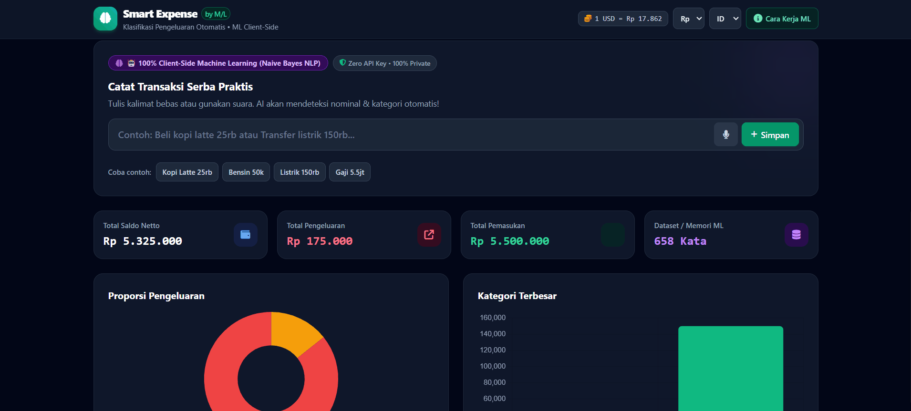

Sigit Adi Irianto
IT & SecOps Specialist | Applied AI Engineer
Specializing in:
IT professional with 20+ years of experience in infrastructure and systems administration, focused on Security Operations and applied AI in recent years. Based in Tangerang, Banten, Indonesia — open to remote roles worldwide.
What I Offer
I pair hands-on IT operations experience with applied AI and SecOps automation — building privacy-first, client-side tools and working comfortably across timezones.
Applied AI & Prompt Engineering
Pengujian & optimasi prompt multi-variabel untuk pipeline LLM, alat ML BYOK sisi-klien, dan alur kerja LLM lokal (Ollama).
SecOps & Threat Monitoring
Wazuh SIEM threat triage that cuts MTTR by up to 45%, FortiWeb WAF, NIST Incident Response playbooks, and ISO 27001 pre-deployment readiness audits.
IT Infrastructure & Administration
Linux/Ubuntu & Docker container administration, automated SQL reporting pipelines, and 20+ years of experience supporting teams of 50+ staff.
Remote & Global Work Readiness
Fully equipped for asynchronous remote operations, multi-timezone team coordination, self-directed troubleshooting, and disciplined documentation.
Projects
Production applications for AI engineering, machine learning, and security.
 Rekayasa Prompt
Rekayasa Prompt
PromptMatrix 2.0 — Platform Rekayasa Prompt

ML Sisi-Klien & PrivasiSmartExpenseML — Klasifikasi Tanpa Retensi Data
 DevSecOps & Otomatisasi MTTR
DevSecOps & Otomatisasi MTTR
SCOPS Command — Mengurangi MTTR hingga 45%
 ERP Cloud Serverless & POS
ERP Cloud Serverless & POS
KantinKu ERP — Cloud POS Tanpa Biaya
 Telemetri SIEM & Threat Hunting
Telemetri SIEM & Threat Hunting
A.R.Y.A. SOC Analytics — Threat Hunting
Client-Side Algorithms & Security Demos
Explore 3 interactive client-side algorithm & security demos running 100% locally in your browser.
1. Live Expense Classifier (Rules + Regex)
2. ML Security & Input Validator
3. Spam & Phishing Detector
Career Journey
Track record across public sector IT infrastructure, SecOps threat triage, and applied AI automation.
Web Administrator
Kontrak / ProyekDirektorat Pengendalian Perubahan Iklim, Proyek MoE & BPDLH (Mar 2026 - Sekarang)
Mengelola infrastruktur berbasis Docker di Ubuntu/WSL untuk platform web pemerintah; men-deploy pemantauan Wazuh SIEM dan sandboxing keamanan DVWA, memangkas waktu review log manual mingguan melalui analisis telemetri yang efisien.
AI Trainer & LLM Evaluator
Paruh Waktu / FreelanceBerbagai Platform Rekayasa Prompt AI (Jun 2024 - Sekarang)
Keterlibatan paruh waktu yang berjalan bersamaan dengan peran kontrak di atas. Menerapkan pengujian dan optimasi prompt multi-variabel pada pipeline LLM — kepatuhan instruksi, kontrol format keluaran, dan evaluasi sadar keamanan — dengan alur kerja BYOK sisi-klien.
Senior Programmer
Kontrak Jangka PendekProyek Kementerian Dalam Negeri RI (Okt 2025 - Des 2025)
Membangun komponen backend untuk sistem transaksi tata kelola digital bervolume tinggi; mengidentifikasi dan menyelesaikan risiko keandalan sistem sambil menjaga pemrosesan tetap sesuai Undang-Undang Perlindungan Data Pribadi Indonesia (UU PDP).
SOC Analyst
Paruh WaktuPT. Prospera Consulting Engineers (Jan 2025 – Sep 2025)
Menulis Playbook Incident Response untuk analis Tier-1 berdasarkan kerangka NIST; menjalankan analisis kesenjangan pra-audit berbasis Wazuh untuk kesiapan ISO 27001; menetapkan metrik dasar Mean Time to Acknowledge (MTTA) untuk tim.
Incident Handling Operational
Kontrak Jangka PendekProyek Kementerian Dalam Negeri RI (Okt 2024 - Des 2024)
Memimpin operasi shift dan threat hunting real-time dengan Wazuh SIEM dan FortiWeb WAF; merestrukturisasi jalur eskalasi untuk mendukung target pengurangan MTTR tim.
IT & Operations Manager
Penuh WaktuAssociated Consulting Engineers - ACE Ltd. (May 2023 - Aug 2024)
Mengelola infrastruktur TI dan operasional teknis untuk tim engineering 50+ orang; membangun pipeline SQL otomatis yang menghilangkan entri data manual dari pelaporan operasional.
Project Office Manager
Kontrak / ProyekKementerian Pekerjaan Umum dan Perumahan Rakyat / PUPR (Des 2020 - Apr 2023)
Peran proyek infrastruktur publik dengan jangka waktu tetap (kontrak berakhir saat proyek selesai). Menjalankan logistik dukungan TI dan operasional teknis di empat proyek infrastruktur secara bersamaan (RWS, Transmission Dadi Muria, Jragung, dan Waduk Bener), menstandardisasi pelaporan di kantor-kantor regional.
Assistant to Office Manager
Kontrak Jangka PendekNippon Koei Co., Ltd (Jun 2020 – Nov 2020)
Mengelola alur kerja pelaporan lintas departemen dan pelacakan anggaran untuk Proyek Modernisasi Irigasi Rentang, mengurangi hambatan alokasi sumber daya di tim-tim regional.
IT Manager
Penuh WaktuPT. Dipta Safari Jaya (Jun 2014 - Apr 2020)
Mengelola infrastruktur jaringan enterprise, server, dan sistem perangkat keras selama 6 tahun; menerapkan pemantauan sistem otomatis dan protokol backup-recovery yang menjaga ketersediaan sistem tetap tinggi.
Early Career Experience
Penuh WaktuPT. Laju Karunia Jaya & Arya Mobile (Feb 2002 – May 2014)
Memelihara sistem komputer enterprise inti, konektivitas jaringan lokal, protokol disaster-recovery, dan troubleshooting perangkat keras TI selama total 12 tahun masa kerja dasar di PT. Laju Karunia Jaya (Jan 2009 – Mei 2014) dan Arya Mobile (Feb 2002 – Des 2008).
Testimony
Direct notes and feedback from managers, leads, and colleagues across my career roles.
"Sigit menangani lingkungan server Docker dan pengaturan pemantauan Wazuh kami dengan sangat teliti. Dia sangat bisa diandalkan, cepat merespons saat alert telemetri muncul, dan menjaga semuanya berjalan lancar."
Budi Santoso
Senior IT Infrastructure Lead • Direktorat Pengendalian Perubahan Iklim (Proyek MoE & BPDLH)
"Saat pembaruan sistem backend kami, Sigit memastikan semua komponen transaksi berjalan andal sambil menjaga kepatuhan ketat terhadap aturan privasi data UU PDP. Engineer yang sangat solid untuk dimiliki di tim."
Rahmat Hidayat
Digital Governance Lead • Proyek Kementerian Dalam Negeri RI
"Sigit menyusun Playbook Incident Response yang praktis untuk tim Tier-1 kami dan membantu kami melalui pemeriksaan keamanan pra-audit dengan Wazuh. Dia terorganisir, teliti, dan mudah diajak bekerja sama."
Hendra Wijaya
Principal Security Consultant • PT. Prospera Consulting Engineers
"Menangani shift malam dan alert keamanan bervolume tinggi bisa membuat stres, tapi Sigit menjaga tim tetap fokus dan menangani triase Wazuh dan WAF secara efektif. Sangat mengapresiasi sikapnya yang tenang."
Aditya Nugroho
SOC Operations Manager • Proyek Kementerian Dalam Negeri RI
"Sigit mengurus infrastruktur TI kantor kami untuk lebih dari 50 karyawan tanpa masalah. Dia merampingkan alur kerja pelaporan kami dan menjaga operasional teknologi harian kami berjalan tanpa hambatan."
Dewi Lestari
Operations Director • Associated Consulting Engineers - ACE Ltd.
"Mengoordinasikan dukungan TI dan pelaporan antar departemen di beberapa kantor regional untuk proyek bendungan dan waduk besar tidaklah mudah, tetapi Sigit menjaga komunikasi dan pelaporan tetap jelas dan tepat waktu."
Bambang Pratama
Regional Project Director • Kementerian Pekerjaan Umum dan Perumahan Rakyat / PUPR
"Sigit membantu kami menjaga pelacakan milestone proyek dan alur kerja anggaran tetap terorganisir selama proyek Irigasi Rentang. Sangat dapat diandalkan dan proaktif dalam mengatasi hambatan operasional."
Agus Kurniawan
Senior Project Consultant • Nippon Koei Co., Ltd
"Sigit mengelola server perusahaan, jaringan lokal, dan perangkat keras kami selama 6 tahun. Setiap kali ada gangguan jaringan atau kerusakan perangkat keras, Sigit selalu ada untuk memperbaikinya dengan cepat."
Setyo Wibowo
General Manager • PT. Dipta Safari Jaya
"Sigit adalah orang andalan kami untuk dukungan pengguna dan pemeliharaan sistem. Dia mengurus backup harian dan troubleshooting perangkat keras secara efisien. Selalu membantu dan pekerja keras."
Tri Widodo
Senior IT Supervisor • PT. Laju Karunia Jaya
"Sigit memulai perjalanan teknologinya bersama kami dengan menangani perbaikan perangkat keras dan dukungan perangkat. Bahkan saat itu, dia memiliki etos kerja yang kuat, kesabaran, dan pola pikir pemecah masalah."
Ahmad Syarif
Technical Services Director • Arya Mobile
Education & Certifications
Verified credentials in AI engineering, cybersecurity operations, and cloud infrastructure.
Pendidikan
Universitas Budi Luhur
Sarjana Ilmu Komputer (S.Kom)
AI & Otomatisasi
- Microsoft Azure AI Fundamentals (AI-900) — Microsoft (2025)
- LLM-Based Tools & Gemini API Integration for Data Scientists — Hacktiv8 (2025)
- Business Automation with n8n — Kodeka Labs (2025)
Keamanan Siber, SecOps & Infrastruktur
- Indonesia Cross-Sectoral Cyber Exercise #9 — BSSN (2024)
- SOC Analyst — Cyber Academy Indonesia (2024)
- DevSecOps for Software Security & IT Auditor — Kelas.work (2024)
- Ubuntu Linux Professional — LinkedIn Learning (2025)
- Penetration Testing Professional — Cybrary (2025)
- Ethical Hacking Foundations — LinkedIn Learning (2025)